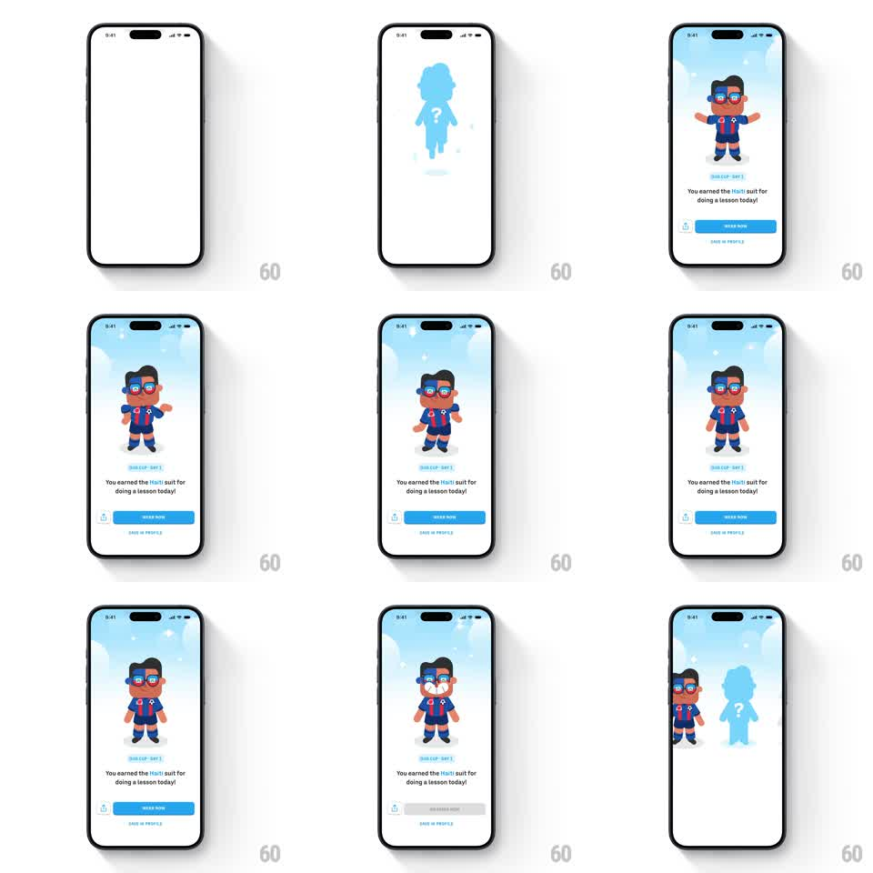

Media
Frame-by-frame

Rebuild this interaction 1:1: Duolingo's Duo Cup suit reveal - a blue silhouette with a question mark stands center; the reward bursts out of it to reveal your character wearing the earned suit ("You earned the Haiti suit for doing a lesson today!"), with WEAR NOW / SAVE IN PROFILE actions and a teaser silhouette of the next unlock beside it.

Rebuild this interaction 1:1: Duolingo's Duo Cup suit reveal - a blue silhouette with a question mark stands center; the reward bursts out of it to reveal your character wearing the earned suit ("You earned the Haiti suit for doing a lesson today!"), with WEAR NOW / SAVE IN PROFILE actions and a teaser silhouette of the next unlock beside it.
## Integration
Integration: stack-agnostic spec - springs given as stiffness/damping, timed motions as duration + curve; map every value to your framework and animation library of choice.
## Scene
Light sky-gradient stage: locked silhouette (blue, "?" on the chest) -> revealed character in the earned soccer suit with glasses, floating on a soft shadow. Below: reward label, headline copy, blue WEAR NOW button, SAVE IN PROFILE text action.
## Motion spec
Pattern: mystery-to-reveal, ~2s.
- Idle: the silhouette bobs gently (translateY +-4px, 2s) with small "?" sparkle twinkles.
- Reveal: silhouette flashes white (150ms), bursts into 6-8 confetti shards (gravity arcs, 500ms), and the suited character springs in (scale 0.5 -> 1, rotate -8deg -> 0, spring ~300/15) with a radial light burst behind it (scale 0 -> 1 -> fade, 400ms).
- Copy: label + headline slide up (250ms, ease-out), buttons follow (150ms later).
- WEAR NOW tap: button presses (scale 0.95, 100ms), character does a happy hop (translateY -16px, spring back).
- The next-unlock silhouette slides in from the right edge as a teaser (300ms, after reveal settles).
## Calibration
- The white flash + confetti burst must hit on the same frame - split them and the reveal loses its snap.
- The character's shadow grows with its scale so it reads as landing, not fading.
## Reduced motion
Silhouette crossfades to the revealed character (300ms); no burst.
## Don't miss
- The next-locked teaser keeps the loop going - it's part of the retention design.
- "SAVE IN PROFILE" is a quiet secondary action; never style it like a second button.